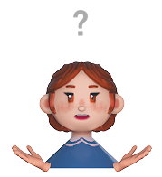
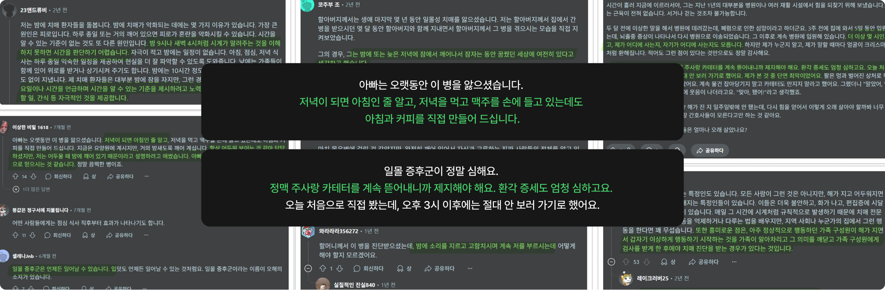

Case Study
Temi
치매 일몰증후군 대응 홈IoT
치매가 진행되며 나타나는 '일몰증후군' 증상은 오후~야간 시간에 환자에게 불안을 일으켜 보호자를 더욱 힘겹게 합니다. 환자를 모니터링하고 증상에 원격으로 대응할 수 있는 홈 IoT 서비스를 설계했습니다.
프로토타입 보기 →
Scroll Down
치매 일몰증후군 대응 홈IoT
치매가 진행되며 나타나는 '일몰증후군' 증상은 오후~야간 시간에 환자에게 불안을 일으켜 보호자를 더욱 힘겹게 합니다. 환자를 모니터링하고 증상에 원격으로 대응할 수 있는 홈 IoT 서비스를 설계했습니다.
프로토타입 보기 →
기술이 발전해도 노화는 지속되고 아픈 사람은 생깁니다. 치매를 앓고 계신 할머니를 통해 노인성 질병은 당사자 뿐만 아니라 모든 가족 구성원 특히 주 보호자의 삶에 큰 영향을 주는 문제라는 점을 알게되었습니다. Temi 프로젝트는 물리적인 몸이 없는 AI 기술이 보호자의 존재가 중요한 치매 증상 케어에 어떻게 사용될 수 있을까에 대한 관심으로부터 시작하게 되었습니다.
일몰증후군이란 오후에서 저녁 시간, 치매 환자가 시공간이나 사람을 정확하게 파악하고 인식할 수 없게 되는 증상을 말합니다. 환자는 불안과 혼란을 느끼며, 망상, 공격적인 행동, 배회와 같은 문제 행동이 나타납니다.

Reddit 내 치매 커뮤니티에서 확인한 실제 일몰증후군 사례들
총 6개의 논문으로 치매 일몰증후군에 대한 기존 연구를 살펴보며, 인간중심 돌봄 모델과 스마트 홈 설계의 가능성 및 한계를 중점적으로 고찰하였습니다. 이를 통해 치매 일몰증후군 완화를 위한 정서적 대처와 기술적 중재의 필요성을 함께 확인했습니다.

6개 논문 분석 정리본
Q. 국내 치매 환자 돌봄 상황의 특이점과 주요한 고충은 무엇일까?
Q. 앞서 확인한 돌봄 모델과 기술 활용가능성이 일반적인 국내 치매 가족에게도 적용될 수 있을까?
우리는 국내의 치매 돌봄에 대해 알아보고자 주 보호자 16명을 대상으로 설문조사를 진행했습니다. 치매 돌봄이 대체로 가정 내에서 가족 구성원끼리만 이루어지며, 이것이 주보호자에게 부담과 어려움이 될 수 있음을 확인했습니다.

돌봄 공간 그래프

환자와 보내는 시간 그래프

전체 서베이 분석 정리
환자와 보내는 시간이 부족한 보호자를 원격 지원 기술이 도와줄 수 있을 거라 가설을 세우고 질적 연구를 이어가자.
우리는 서베이 응답자 중 5명을 대상으로, 반구조화 2대1 심층 인터뷰를 진행했습니다. 주요 질문과 보조 질문을 나누어 구성한 유연한 진행으로 보호자가 겪는 어려움과 IoT 기술에 대해 보다 솔직한 생각을 듣고자 했습니다.

인터뷰 프로토콜
인터뷰 질문지 & 진행 시 메모
인터뷰 컬러 코딩

인터뷰 정성 분석
기술을 그대로 쓰기보다, 보호자의 부담을 줄이는 방향으로 문제를 다시 정의해보자.
인터뷰 정성 분석

인터뷰 프로토콜

인터뷰 질문지 & 진행 시 메모

인터뷰 컬러 코딩
우리는 앞선 서베이와 인터뷰에서 드러난 환자 모니터링의 어려움에 주목해 퍼소나를 설정했습니다. 이 과정에서 환자와 떨어져 있기에 긴급 상황에 적절히 대응하기 어려운 점과 환자를 달래는 과정에서 생기는 보호자의 정서적 피로를 핵심 문제로 보고 보호자의 행동과 생각을 정리했습니다.

퍼소나 프로필
어떻게 하면 원격으로 환자의 증상을 완화시킬 수 있을까?
우리는 HMW에 답하기 위해 Matter와 Thread 기반 홈 IoT 기술과 시니어 케어 로봇을 조사했습니다. 이를 바탕으로 환자의 시선이 닿는 곳에 화면을 두어 긴급 상황에 대응할 수 있는 프로젝션 방식 홈 IoT 허브, Temi를 설계하고, 심박수, 혈압, 체온, 수면 패턴 등 다양한 생체 신호를 감지하는 센서를 포함했습니다.

Temi 아이디어 스케치 & 기기 개념도

홈 IoT 기기 레퍼런스

레퍼런스 화면 분석
우리는 앞서 확인한 기술과 일몰증후군 대응법을 바탕으로 기능을 아이데이션했습니다. 그 후 'AI 보이스', '자동 대응', '루틴화', '전환적 대응', '환경 조성', '모니터링 및 알림' 6개 카테고리로 나누었습니다.

기능 아이데이션
핵심기능을 정하기 위해 두번의 2X2 매트릭스로 기능을 줄여나갔습니다. 최종적으로 Do now에 남은 기능을 분석하여 "보호자가 밖에서도 환자의 일몰증후군 증상에 대응할 수 있도록 돕는다"라는 MVP를 뽑아냈으며, 마지막으로 MVP 흐름을 정리하여 알림 설정 → 증상 감지 → 긴급 대응 → 결과 기록 순으로 기능을 배치했습니다.

인터뷰 프로토콜

인터뷰 질문지 & 진행 시 메모

인터뷰 질문지 & 진행 시 메모
효율적으로 화면을 구성하기 위해 팀원과 함께 Crazy 8s를 진행했습니다. 스케치 이후 화면 별로 각자 2~3개 안에 투표하고, 화면당 약 5분간 논의를 거쳐 화면 설계의 기준을 정리했습니다. 이 과정에서 핵심 플로우에 집중하기 위해 온보딩 등 초기 진입 화면은 설계 범위에서 제외하고, 주 기능을 '긴급 대응'으로 정의해 대응 방식의 성격에 따라 '자동 대응'과 '직접 대응'으로 나누어 체계화했습니다.
Crazy 8s 스케치 전체 이미지

Crazy 8s 결과

Crazy 8s 스케치

셀렉션 스케치
다양한 기능을 성격에 따라 효율적으로 분류하면서도, 기능 간의 이동이 자유롭고 단순해서 빠른 대처가 가능할 것.
긴급한 상황에서도 빠르게 선택할 수 있도록 메뉴를 최소화하고, 기능의 진입 지점을 명확하게 구분해 헷갈리지 않게 했습니다. 사용자가 고민하지 않고 바로 행동할 수 있는 구조로 화면을 설계했습니다.
긴급 대응 플로우
자동 대응 플로우
각 화면에서 필요한 정보와 기능을 명확히 구분해 배치했습니다. 사용자의 행동에 따라 화면이 어떻게 반응하는지 실제 구현을 고려해 정의했습니다.

와이어프레임
가독성을 고려해 본문의 최소 폰트 사이즈를 16px이상으로 설정했습니다. 또한, 중장년 사용자가 정보를 더 명확하게 인지할 수 있도록 주요 버튼은 모두 44x44px 이상의 충분한 크기로 설계하고, 컬러 시스템에서 명도 대비를 고려했습니다.
디자인 시스템 fig 파일 →
디자인 시스템
MVP 달성을 위한 핵심 화면들입니다.
사용성 테스트를 진행하여 SUS와 Task Completion으로 정량 평가, 인터뷰 기반 Thematic Analysis를 병행했습니다. SUS 77.5점으로 전반적 사용성은 확보되었으나, Measured Experience에서 핵심 기능의 AI 신뢰 부족과 환자 상태에 대한 실시간과 사후 확인이라는 개선 과제를 도출했습니다.

Measured Experience

AI에 대한 평가 (Thematic Analysis 발췌)
AI 기능, 특히 시니어 케어 프로덕트에서는 조작 편의보다 신뢰와 안심 경험이 사용 판단의 핵심 기준이 됨을 확인했습니다.